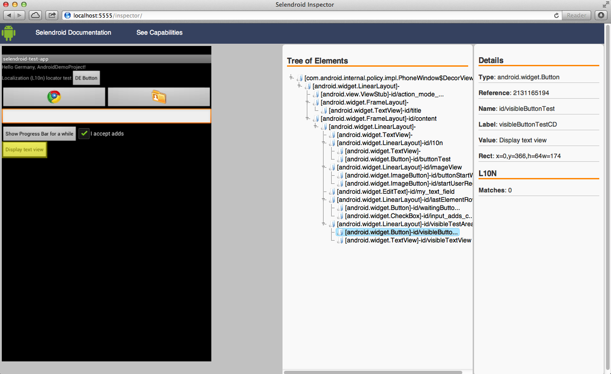
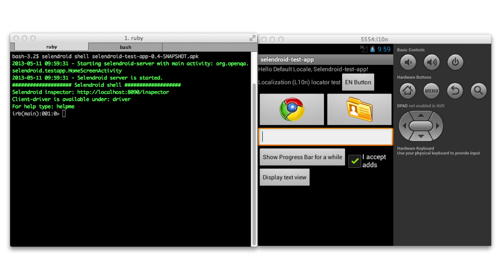

Selendroid Inspector
Selendroid comes with a useful little tool called Selendroid Inspector. It’s a little web app which is embedded inside your selendroid test server. Its purpose is to let you inspect the current state of your app’s UI.

Features
- View hierarchy
- View properties
- Display the capabilities
- UI Snapshot with view locator
Note:
The inspector currently does not support inspecting web views. For getting the html page source you can type in the selendroid shell:
driver.switch_to.window('WEBVIEW')
driver.page_sourceWhere do I get it?
The web app is running on: http://localhost:5555/inspector
Selendroid Shell
The selendroid gem has a build in Ruby shell:
selendroid shell <pathToYourAPK>
Using the shell
By default the selndroid server and webdriver client are started automatically. If you would like to do it manually, just type
start_selendroid_server(nil)or
start_selendroid_clientIf you are in the shell and would like to get help, just type:
helpmeTo start the selendroid inspector in your default browser, just type:
inspector